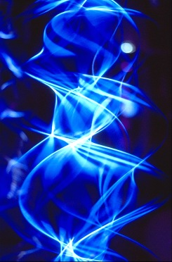
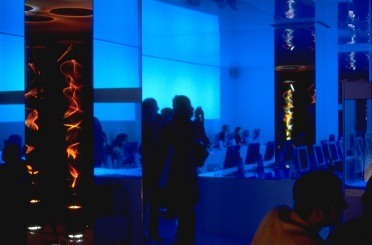

NUTOPIA
NUTOPIA
NUTOPIA
COVENT GARDEN DEPARTS FOR
CYBERSPACE
February 2000 saw the launch of NUTOPIA, London's first Cyberlounge. Challenging the imagination of its competitors with interiors that steal from Kubrick's masterpiece 2001, NUTOPIA aims to provide London with a space where technology meets creativity in an environment designed to appeal to a style conscious clientele.
LAUNCHPAD The Art space Entry to NUTOPIA is via Launchpad, a platform for designers using new technology. Launchpad's first exhibition features the light emitting sculpture of Paul Friedlander. The top picture shows view from Launchpad through to the Multimedia workspace. The picture below shows a detail from Friedlander's work LIGHTWAVE. Adjoining Launchpad is an organic juice cafe where customers can socialise with friends or wait to go on-line.

CYBERLOUNGE The Multimedia workspace
Corporate groups and individuals can access a bank of 40 low radiation monitors, designed for the ultimate comfort of its user. Two aquariums have been installed to de-ionise the air. Aquamarine lighting is diffused through translucent walls to reflect off high gloss surfaces, creating the illusion of being submerged in a pool of tropical water.

The exhibition at Nutopia ran from 2000 - 2001. It is no longer on show.
NUTOPIA website @ www.nutopia.net

Home Page | New in 2000 | Lightforms' 98 | Zip Art